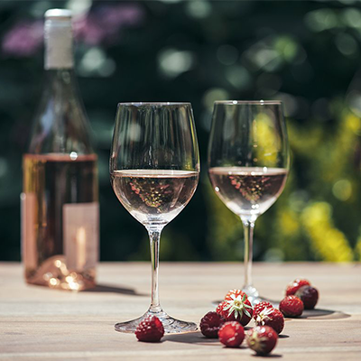
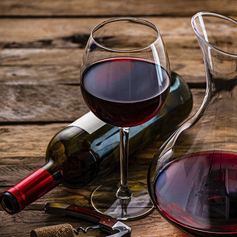

- Chardonnay
Esta es una de las uvas blancas más reconocidas y versátiles. Se cultiva en todo el mundo y produce vinos con diferentes estilos, desde ligeros y refrescantes hasta ricos y cremosos. Los vinos chardonnay suelen tener notas de frutas tropicales, manzana, cítricos y mantequilla. - Sauvignon Blanc
Originaria de Francia, esta uva produce vinos blancos con una acidez vibrante y aromas herbáceos. Los vinos Sauvignon Blanc suelen ser frescos, cítricos y herbales, con notas de limón, hierba cortada y grosella. - Riesling
Esta uva se asocia principalmente con Alemania, pero se cultiva en muchas regiones vinícolas del mundo. Los vinos Riesling pueden variar en dulzura, desde seco hasta dulce, y tienen una acidez distintiva. Se caracterizan por sus aromas florales, cítricos y de frutas blancas, como manzana y durazno. - Viognier
La viognier es conocida por sus aromas intensos y seductores, que pueden incluir notas de melocotón, albaricoque, flor de azahar y especias sutiles. En boca, suele ser suave, con una acidez equilibrada y un cuerpo medio a pleno. Esta uva se destaca por su capacidad para producir vinos blancos ricos y aromáticos, con una textura sedosa y un final largo. - Gewürztraminer
Originaria de la región de Alsacia en Francia, esta uva produce vinos blancos aromáticos y especiados. Los vinos Gewürztraminer son conocidos por sus notas florales intensas, como rosa y lichi, así como por toques de especias como jengibre y clavo de olor. - Pinot Grigio/Pinot Gris
Esta uva es popular en Italia, especialmente en la región del norte de Italia. Los vinos Pinot Grigio son ligeros, secos y refrescantes, con sabores de cítricos, pera y melocotón.

- ¿Qué es el vino rosado?
Sin duda alguna el vino Rosé es de las bebidas más versátiles para acompañar cualquier tipo de plato o comida. Al ser un vino que tiene sabores frutales puede digerirse fácilmente y consumirse en cualquier momento del día, es ideal para todo tipo de paladares. En Descorcha te queremos mencionar los bocadillos, postres y quesos que puedes acompañar para consumir este vino. - ¿Con que se acompaña un vino rosé?
El vino rosado es perfecto para quienes disfrutan de los sabores suaves, este obtiene su característico color de las mismas uvas con las que es elaborado el vino tinto pero implementando el mismo proceso que en los vinos blancos. Ahora veremos opciones de cómo acompañar el vino rosado de la mejor manera. - Acompañar el vino rosado con pescados y mariscos
Aunque lo más común es pensar en acompañar este tipo de alimentos con un vino blanco, debes saber que los vinos rosados les hacen una muy buena competencia, especialmente los que tienen olores y sabores frutales, ya que intensifican el sabor potente de ciertos mariscos y pescados. - Acompañar el vino rosado con pastas y ensaladas
Sobre los platos fuertes, debes tener en cuenta que mientras menos condimentado esté,irá mucho mejor con el vino rosado. Es por esto que las pastas, ensaladas y arroces son una gran opción cuando te preguntas cómo acompañar el vino rosado. Este vino aporta una suavidad y frescura únicas que hacen que disfrutes tu plato en mayor medida. - Acompañar el vino rosado con carnes y quesos
Una de las mejores opciones para maridar un vino rosado son las carnes rojas, el sabor afrutado del vino rosado va muy bien con carnes como las costillas asadas en en general con cualquier carne a la brasa. En cuanto a los quesos, los más suaves como el camembert son perfectos para acompañar con vino rosado. - Acompañar el vino rosado y postres
Aquellos que tienden a ser más dulces, maximizarán el sabor de los postres como un pay de limón, un pastel de chocolate y nata, etc. También irán mejor con los postres hechos de frutas como tartas. Cuando llega la hora del postre hay libertad absoluta en cuanto al tipo de vino rosado. Hay quienes prefieren las bebidas más ácidas para contrastar el dulzor del plato; mientras que otros prefieren las alternativas más armónicas con rosados más afrutados, más densos y con más cuerpo. - ¿Cómo maridar el vino rosado espumoso?
El vino rosado espumoso se puede acompañar casi con cualquier tipo de comida o cena al igual que un vino tinto, aunque hay algunos tipos que le van mejor, cada vez queda más atrás la creencia de que su consumo es exclusivo de celebraciones o eventos importantes y cada vez más personas lo consumen con regularidad.
El proceso de los vinos espumosos hacen que tengan burbujas pequeñas, uniformes y suaves que entregan cremosidad a la boca y liberan las papilas gustativas favoreciendo el sabor de los platos más densos.

- Cabernet Sauvignon
La uva Cabernet Sauvignon procede del suroeste de Francia, su origen se remonta al siglo XVII y se produjo como un cruce entre la Sauvignon Blanc y la Cabernet Franc. Una de las características más notorias de esta cepa es su facilidad para adaptarse a diversos climas. De igual forma, su capacidad de resistencia a los ataques de insectos y a la alta humedad. En la actualidad, es considerado como uno de los vinos con mayor popularidad en la región de Burdeos y algunos lugares de Europa, América y Australia. Los vinos tintos elaborados con Cabernet Sauvignon presentan sabores herbales por su gran porcentaje de taninos, así mismo, es posible percibir sus aromas y colores intensos. Esta cepa contribuye a que los vinos conserven de forma favorable su acidez y arrojan productos con bastante elegancia. Estos vinos se pueden maridar con diferentes platos como son: carnes asadas, pastas, lasañas, aves y algunas variedades de quesos. - Pinot Noir
Esta cepa de vino tinto dio su salto a la gloria durante la segunda mitad del siglo XIV. Se originó en Borgoña, Francia, recibe este nombre debido a que crece en racimos que tienen forma de piña y poseen un color oscuro. Este tipo de uva suele cultivarse mejor en climas fríos y produce vinos bastante elegantes. Suele ser una cepa que requiere de muchos cuidados para que se logre obtener los resultados esperados. Las variedades de Pinot Noir se destacan por ser suaves y muy agradables al paladar, esto se debe principalmente a que contiene una cantidad baja de taninos. Es posible percibir un color rubí intenso, con aromas de frambuesa y fresas maduras; a su vez, en nariz se pueden sentir aromas de cereza y grosella. Podrás maridar este tipo de vinos con: legumbres, carnes blancas, recetas asiáticas y variedades de quesos suaves. - Merlot
Este tipo de cepa se caracteriza por pronunciar distintas personalidades según el tipo de clima donde se cultive, ya sea que el viñedo sea más frío o más cálido. Está se originó en la ciudad de Burdeos, Francia, luego de un cruce entre la Cabernet Franc y una variedad antigua conocida como Magdaleine Noire des Charentes. Este tipo de uva arroja vinos de color intenso, con baja acidez y redondos con cuerpo. Se destacan por ser vinos que arrojan aromas elegantes y complejos, además, son bastante fáciles de beber. En boca puede sentirse la menta, las pasas y la fruta negra. Suelen maridar a la perfección con quesos maduros, dulces, verduras, guisos y platos de caza. - Syrah
Esta cepa también es denominada como Shiraz y su origen se remonta al sureste de Francia, cuando se dio un cruce entre la mondeuse blanche y la dureza. Este vino posee distintas características propias como es su color intenso, un nivel de acidez alto y es rico en taninos. Esta uva suele dar como resultado vinos ahumados, afrutados y con aromas florales. Una de las particularidades de estos vinos es que al volverse añejos, los taninos le van a aportar un sabor con más fuerza. Puedes maridar este tipo de vinos con quesos de carácter, carnes a la brasa, guisos fuertes y platos de cacería. - Carmenere
Esta cepa proviene de la ciudad francesa de Médoc, pero se exterminó en Europa en el siglo XIX como consecuencia de la filoxera. Pero sería en 1994 cuando un enólogo de origen francés haría el descubrimiento de ejemplares auténticos de esta cepa en Chile. Por lo que desde entonces, se considera a esta uva con doble nacionalidad. Los vinos producidos con esta cepa carmenere se caracterizan por tener un aroma a bayas frutosos. Además, su color es rojo intenso y posee una baja concentración de taninos, lo cual permite que sea un vino liviano que suele caer muy bien en la mayoría de paladares. Si quieres maridar este tipo de vinos, lo puedes hacer con carnes asadas, pastel de choclo, empanadas de pino, carnes de cerdo, carnes asadas y platos en base a tomate. - Malbec
No podíamos dejar por fuera de este listado el vino Malbec, esta cepa es originaria de Argentina y la más popular de este país. El fruto se caracteriza por tener color oscuro y un gran porcentaje de taninos. Este tipo de vinos se caracterizan por dejar en boca un sabor a ciruelas negras y moras. Además, sus taninos suelen ser maduros y cuentan con sabores afrutados. Y con ¿qué puedes maridar un Malbec? Las opciones son variadas, siendo las más populares las verduras, la carne de res y la carne de cordero.